Student Work
The following are works by college and pre-college students in painting and other media.
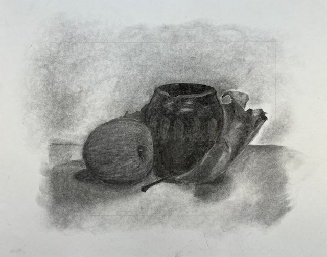
Non-Majors, Drawing 1, Chatham University, Still Life, Vine Charcoal
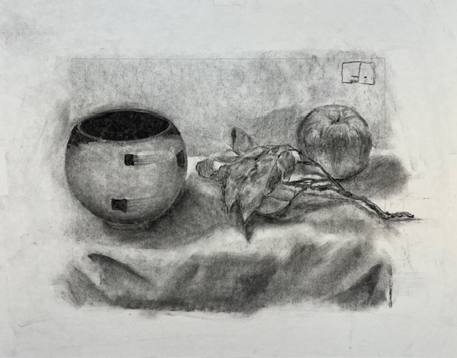
Non-Majors, Drawing 1, Chatham University, Still Life, Vine Charcoal
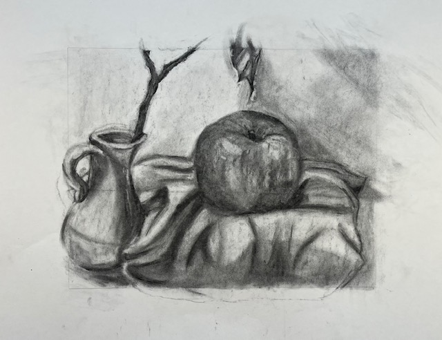
Non-Majors, Drawing 1, Chatham University, Still Life, Vine Charcoal
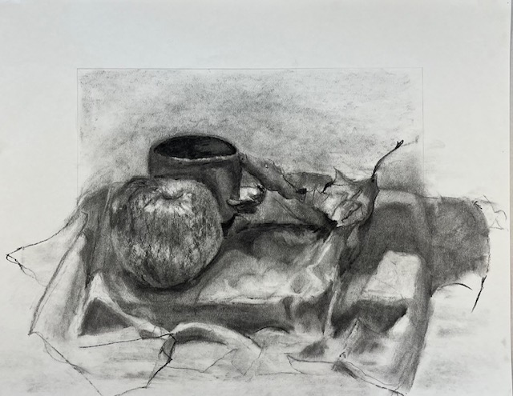
Non-Majors, Drawing 1, Chatham University, Still Life, Vine Charcoal
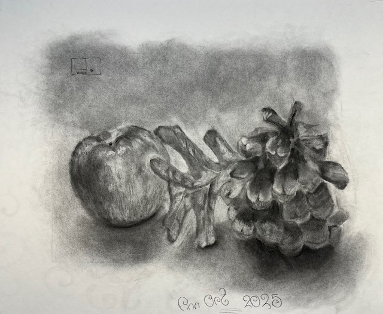
Non-Majors, Drawing 1, Chatham University, Still Life, Vine and Compressed Charcoal
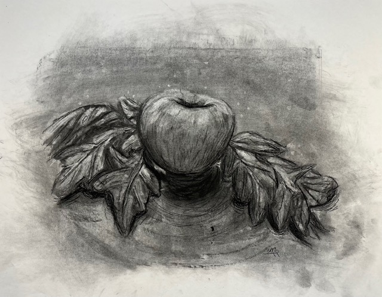
Non-Majors, Drawing 1, Chatham University, Still Life, Vine and Compressed Charcoal
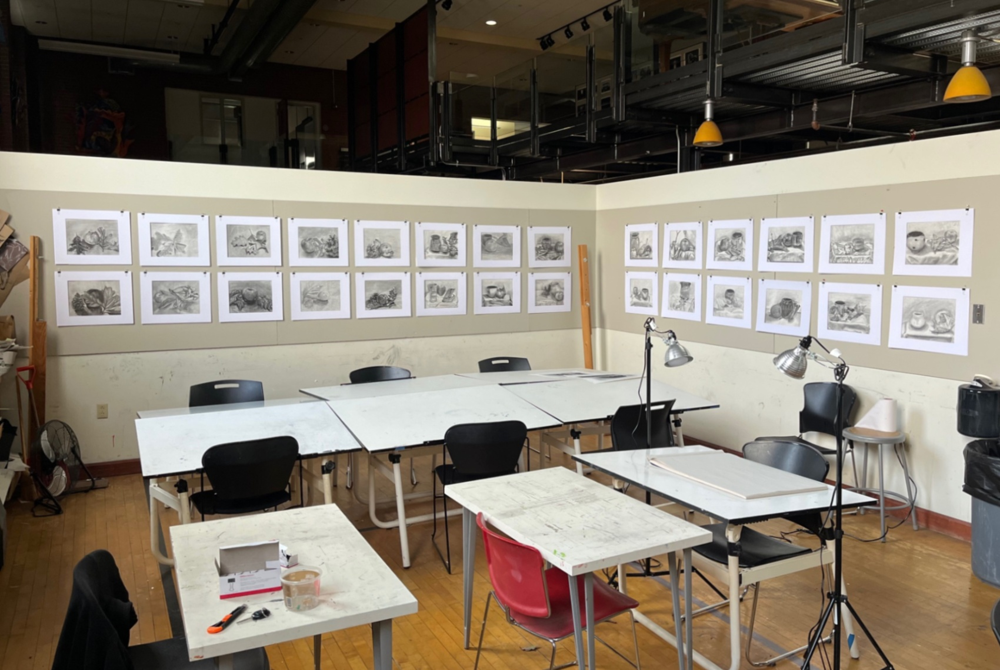
Drawing 1, Chatham University, classroom installation
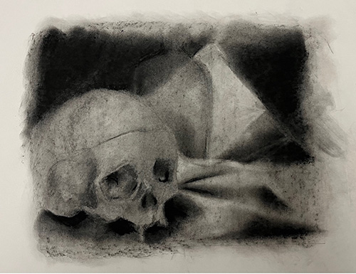
Non-Majors, Drawing 1, Chatham University, Reductive Drawing from final class
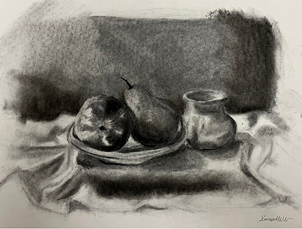
Non-Majors, Drawing 1, Chatham University, Reductive Drawing from final class
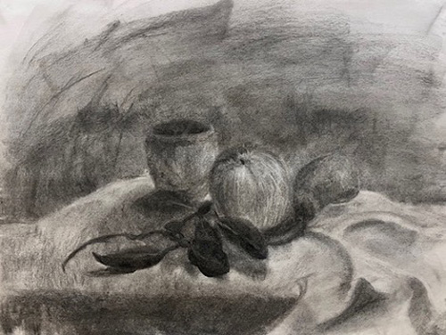
Non-Majors, Drawing 1, Chatham University, Tonal Still Life After Midterm Critique
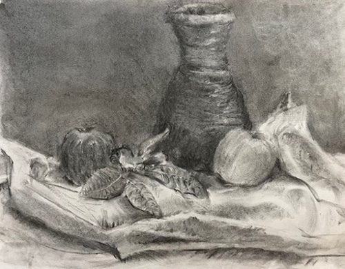
Non-Majors, Drawing 1, Chatham University, Tonal Still Life After Midterm Critique
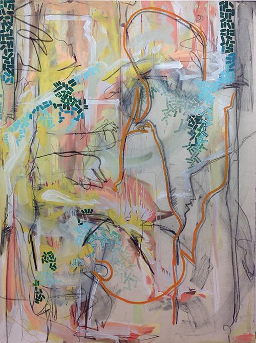
Advanced Painting, Student-designed
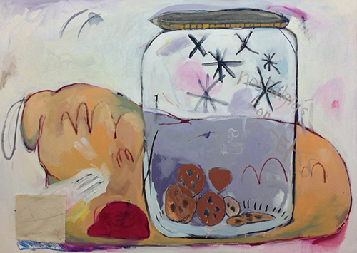
Advanced Painting, Student-designed
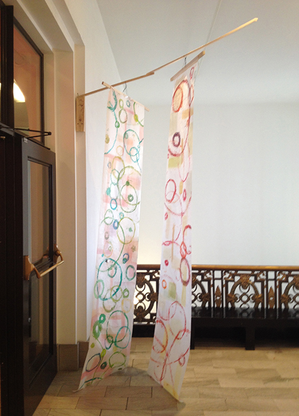
Advanced Painting, Student-designed
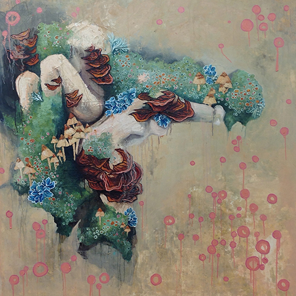
Advanced Painting, Student-designed
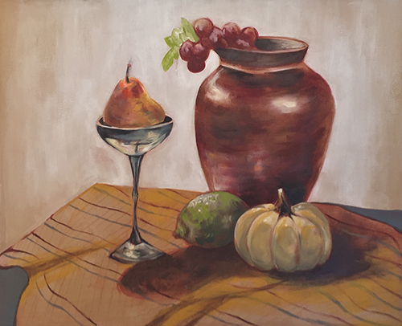
Precollege, Still Life, acrylic and oil
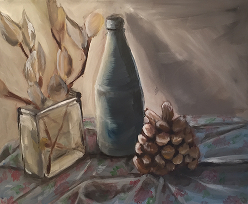
Precollege, Still Life, acrylic and oil
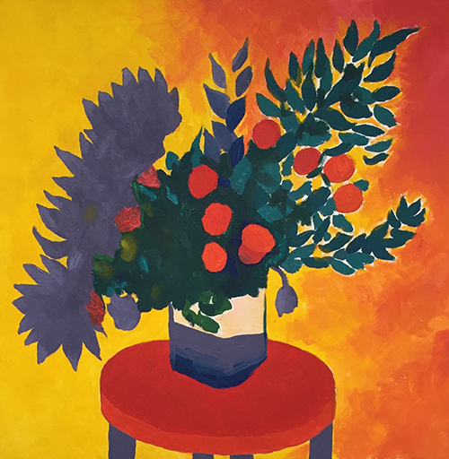
Precollege, Semi-Abstraction, acrylic and oil
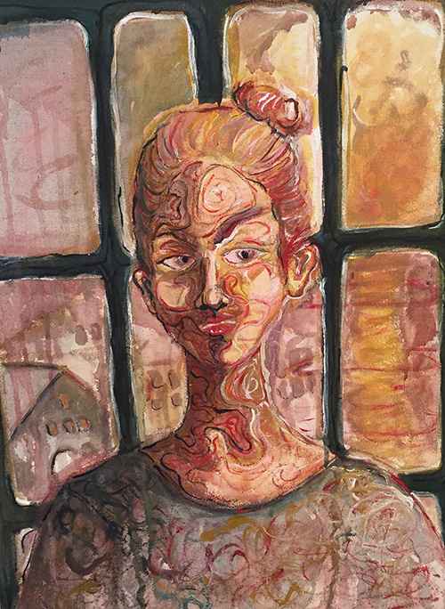
Precollege, Portrait, acrylic
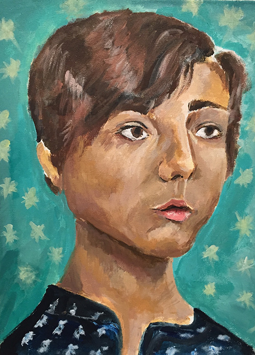
Precollege, Portrait, acrylic and oil
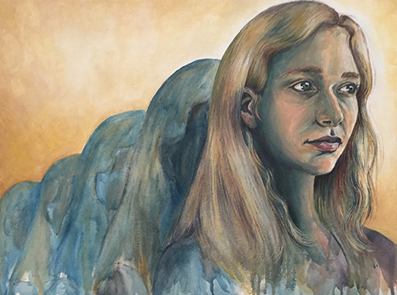
Precollege, Portrait, acrylic
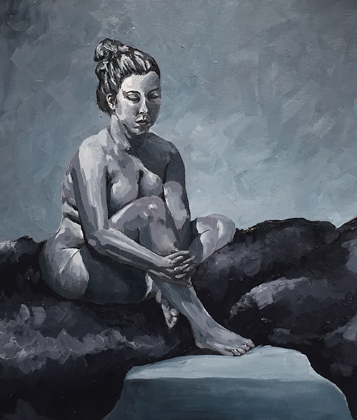
Precollege, Figure, acrylic and oil
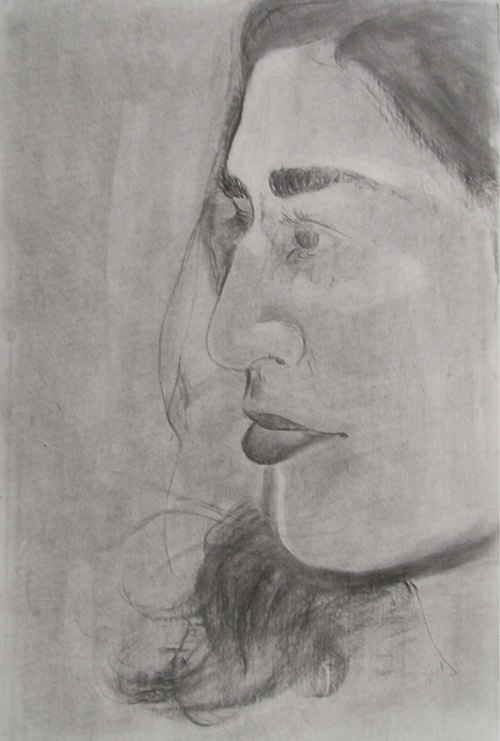
Precollege, Portrait, charcoal
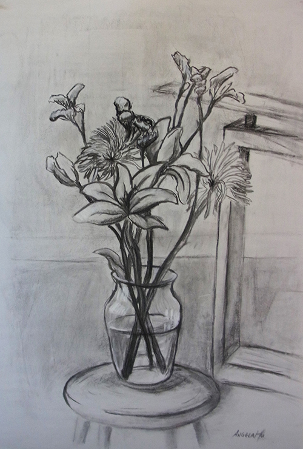
Drawing for Non-Majors, still life charcoal
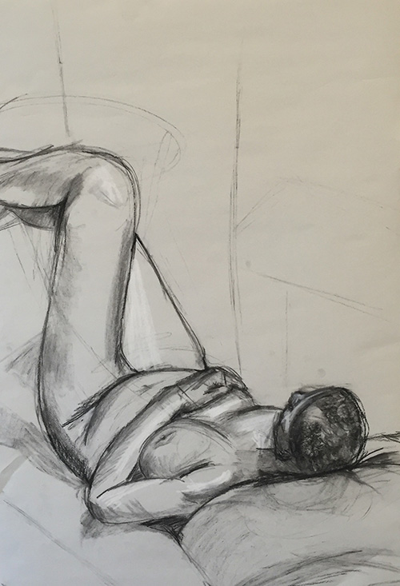
Drawing for Non-Majors, figure charcoal
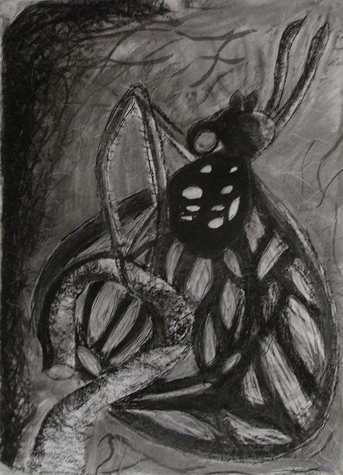
Drawing for Non-Majors, large charcoal
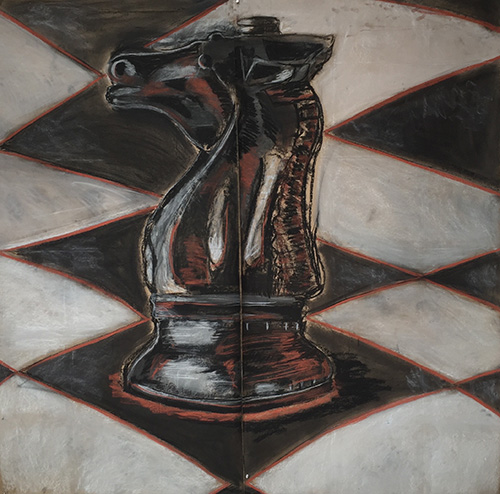
Drawing for Non-Majors, large charcoal